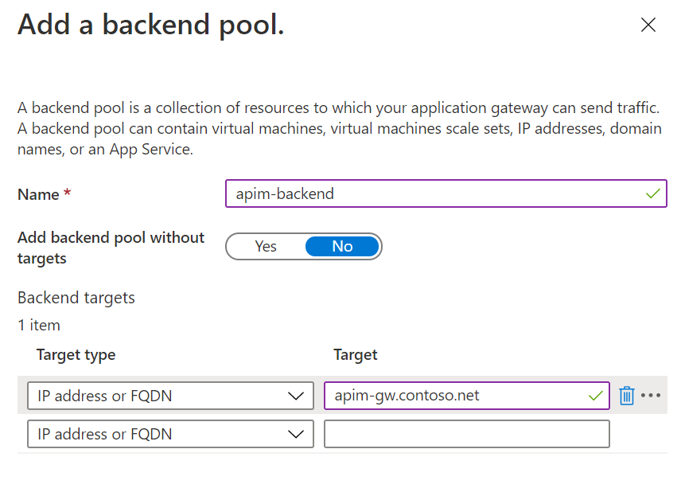
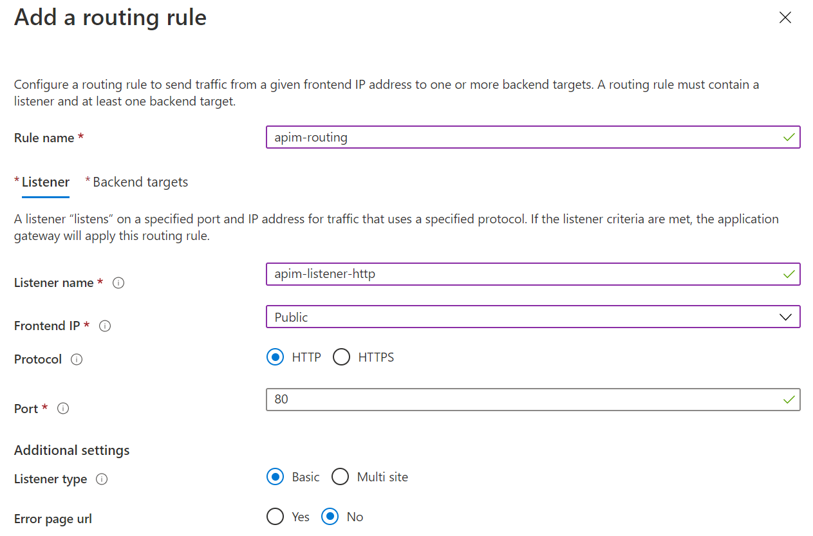
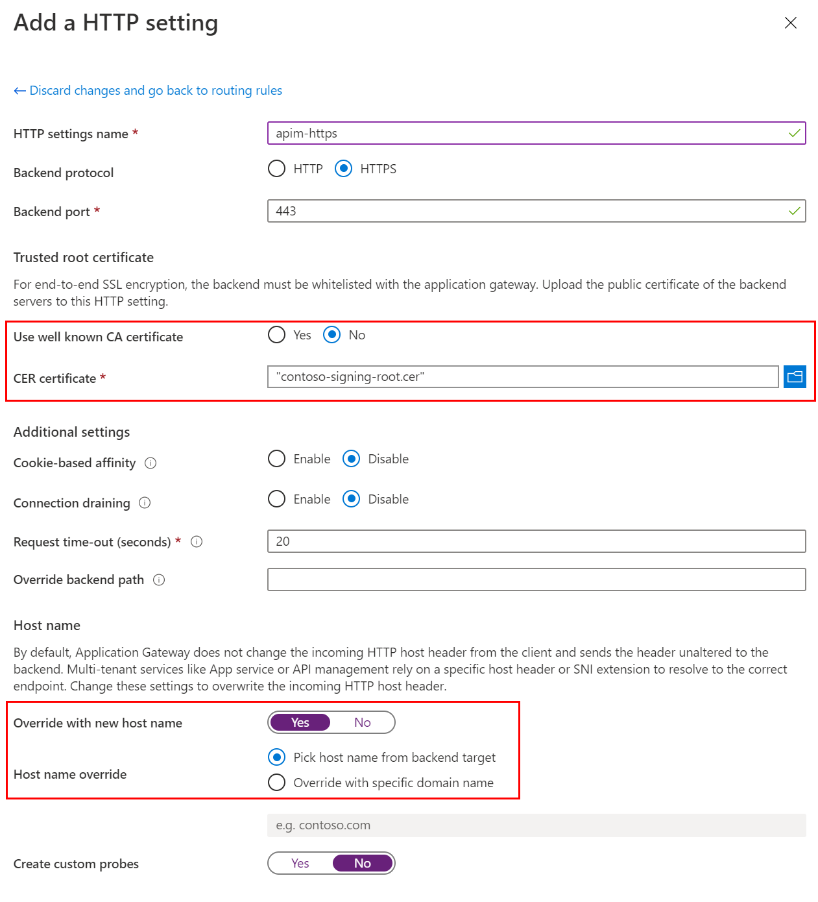
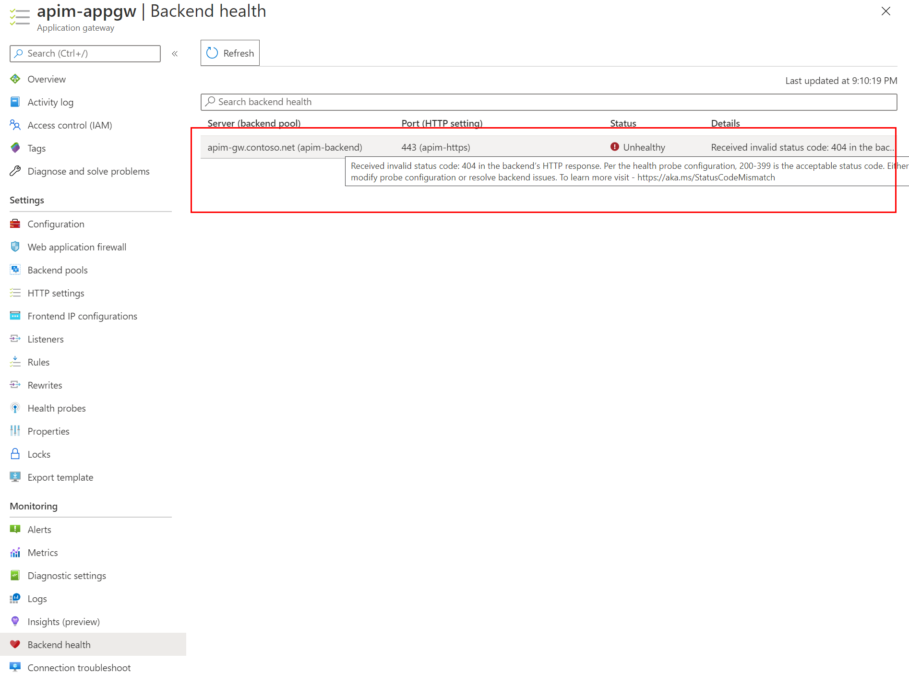
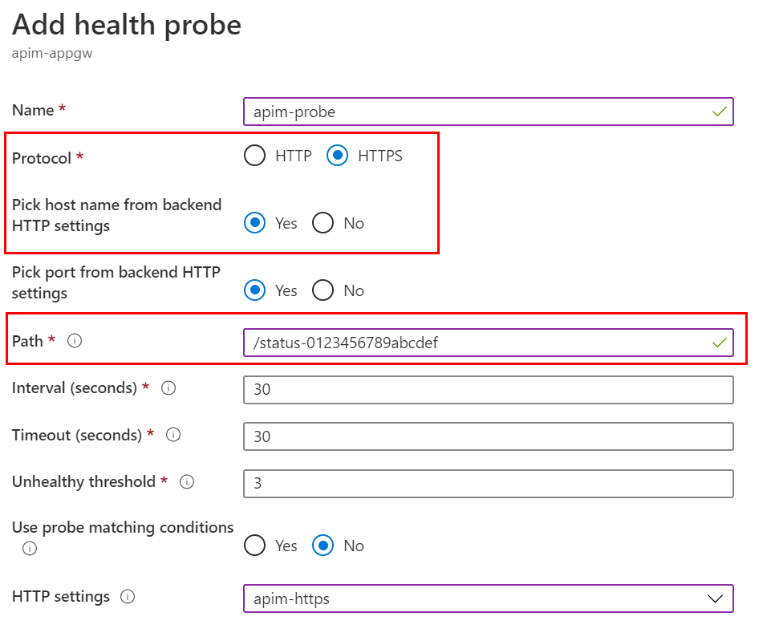
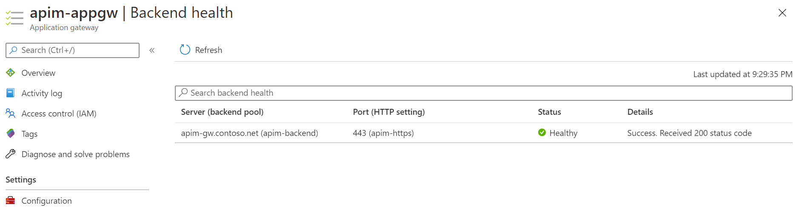

Integrate the APIM instance with Application Gateway
In the last tutorial, you connected the APIM instance to the VNET in Internal mode and configured the custom domain names for it. In this tutorial, we continue integrating the APIM instance with an Application Gateway.
In this tutorial, you learn to:
- ✅ Create Application Gateway
- ✅ Create the custom healthy probe for APIM
- ✅ Verify the integration
Create Application Gateway
-
In the Azure Portal, add a new resource by clicking Create a resource link.
-
Search and create
Application Gateway. -
Choose resource group
apim-rg, regionEast US, and give it a name such asapim-appgw. -
Choose VNET
apim-vnetand subnetappgw-subnet. Click Next: Frontends button. -
Choose
Publicfor the frontend IP and create a new public IP address. And then click Next: backend button. -
Add a backend pool as shown in the following diagram.

-
Move to Configuration and add a routing rule. The Listener of the routing rule is shown below.

-
Choose apim-backend as the Backend target, and add a new HTTP settings as shown below. Note that
contoso-signing-root.ceris used for CER certificate and Host name override is set to pick the name from backend.
-
Move to Tags and add tags if you want. Then move to Review + create.
-
Click Create to create the AppGW.
Create custom health probe
When the deployment of the AppGW is completed, if you go to the resource, you would notice that the backend status is unhealthy. That is because the default probe of AppGW doesn't work for APIM. We need to create a custom health probe for it.

-
Click Health probes and click Add to add a custom health probe. The details of the custom health probe are shown in the diagram below. Note the Protocol and host name settings. The Path of the APIM probe is
/status-0123456789abcdef.
-
Uncheck I want to test the backend health before adding the health probe option and click Add.
-
Go to Backend health and refresh. The status of the backend should be Healthy now.

Verify the integration
We can verify if the integration works by sending a request to the public IP address of the AppGW. We do it with Azure Cloud Shell in this tutorial. You can also do it with other tools such as Postman.
-
In the Azure Portal, open Azure Cloud Shell. Choose Bash for the shell.
-
Run the following command with
curl. You can find the subscription key of APIM on the Subscriptions page of APIM, and the public IP address of AppGW on the Overview page of AppGW.curl -I -H "Ocp-Apim-Subscription-Key: [subscription key]" http://[AppGW public IP]/echo/resource -
If everything works, you get
HTTP 200 OKin the response.
Now you've integrated the APIM instance with an AppGW. Let's move on to the next tutorial to expand the deployment further with a self-hosted gateway.